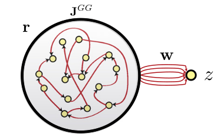

Neurocomputing
Reservoir computing
Professur für Künstliche Intelligenz - Fakultät für Informatik
Reservoir computing

The concept of Reservoir Computing (RC) was developed simultaneously by two researchers at the beginning of the 2000s.
RC builds on the idea of Hopfield networks but focuses on the dynamics rather than on the fixed points.
Herbert Jaeger (Bremen) introduced echo-state networks (ESN) using rate-coded neurons.
Wolfgang Maass (TU Graz) introduced liquid state machines (LSM) using spiking neurons.
Echo-state networks
- An ESN is a set of recurrent units (sparsely connected) exhibiting complex spatiotemporal dynamics.

- Rate-coded neurons in the reservoir integrate inputs and recurrent connections using an ODE:
\[ \tau \, \frac{dx_j(t)}{dt} + x_j(t) = \sum_i W^\text{IN}_{ij} \, I_i(t) + \sum_i W_{ij} \, r_i(t) + \xi(t) \]
- The output of a neuron uses the tanh function (between -1 and 1):
\[ r_j(t) = \tanh(x_j(t)) \]
Reminder : The rate-coded neuron

- Let’s consider a simple rate-coded neuron taking a step signal \(I(t)\) as input:
\[ \tau \, \frac{d v(t)}{dt} + v(t) = I(t) \]
\[ r(t) = (v(t))^+ \]
- The “speed” of \(v(t)\) is given by its temporal derivative:
\[ \frac{d v(t)}{dt} = \frac{I(t) - v(t)}{\tau} \]
When \(v(t)\) is quite different from \(I(t)\), the membrane potential “accelerates” to reduce the difference.
When \(v(t)\) is similar to \(I(t)\), the membrane potential stays constant.
Reminder : The rate-coded neuron
The membrane potential follows an exponential function which tries to “match” its input with a speed determined by the time constant \(\tau\).
The time constant \(\tau\) determines how fast the rate-coded neuron matches its inputs.
Biological neurons have time constants between 5 and 30 ms depending on the cell type.

Echo-state networks
- Readout neurons (or output neurons) transform linearly the activity in the reservoir:
\[ z_k(t) = \sum_j W^\text{OUT}_{jk} \, r_j(t) \]
In the original version of the ESN, only the readout weights are learned, not the recurrent ones.
One can use supervised learning to train the readout neurons to reproduce desired targets.
Echo-state networks
Inputs \(\mathbf{I}(t)\) bring the recurrent units in a given state (like the bias in Hopfield networks).
The recurrent connections inside the reservoir create different dynamics \(\mathbf{r}(t)\) depending on the strength of the weight matrix.
Readout neurons linearly transform the recurrent dynamics into temporal outputs \(\mathbf{z}(t)\).
Supervised learning (perceptron, LMS) trains the readout weights to reproduce a target \(\mathbf{t}(t)\).
It is similar to a MLP with one hidden layer, but the hidden layer has dynamics.
Echo-state networks
- When \(g<1\), the network has no dynamics: the activity quickly fades to 0 when the input is removed.

Echo-state networks
- For \(g=1\), the reservoir exhibits some transcient dynamics but eventually fades to 0 (echo-state property).

Echo-state networks
- For \(g=1.5\), the reservoir exhibits many stable attractors due to its rich dynamics (Hopfield-like).

Echo-state networks
- For higher values of \(g\), there are no stable attractors anymore: chaotic behavior.

Representational power at the edge of chaos
- For \(g = 1.5\), different inputs (initial states) lead to different attractors.

Chaotic behavior for high values of \(g\)
- In the chaotic regime, the slightest uncertainty on the initial conditions (or the presence of noise) produces very different trajectories on the long-term.

Edge of chaos
The chaotic regime appears for \(g > 1.5\).
\(g=1.5\) is the edge of chaos: the dynamics are very rich, but the network is not chaotic yet.

Training the readout neurons

- Using the reservoir as input, the linear readout neurons can be trained to reproduce any non-linear target signal over time:
\[ z_k(t) = \sum_j W^\text{OUT}_{jk} \, r_j(t) \]
- As it is a regression problem, the delta learning rule (LMS) is often enough.
\[ \Delta W^\text{OUT}_{jk} = \eta \, (t_k(t) - z_k(t)) \, r_j(t) \]
- Reservoirs are universal approximators: given enough neurons in the reservoir and dynamics at the edge of the chaos, a RC network can approximate any non-linear function between an input signal \(\mathbf{I}(t)\) and a target signal \(\mathbf{t}(t)\).
Pattern separation
The reservoir projects a low-dimensional input into a high-dimensional spatio-temporal feature space where trajectories becomes linearly separable.
The reservoir increases the distance between the input patterns.
Input patterns are separated in both space (neurons) and time: the readout neurons need much less weights than the equivalent MLP: better generalization and faster learning.
The only drawback is that it does not deal very well with high-dimensional inputs (images).

Feedback connections
- The output of the readout neurons can be fed back into the reservoir to stabilize the trajectories:
\[ \tau \, \frac{dx_j(t)}{dt} + x_j(t) = \sum_i W^\text{IN}_{ij} \, I_i(t) + \sum_i W_{ij} \, r_i(t) + \sum_i W^\text{FB}_{kj} \, z_k(t) + \xi(t) \]

This makes the reservoir much more robust to perturbations, especially at the edge of chaos.
The trajectories are more stable (but still highly dynamical), making the job of the readout neurons easier.
Applications of Reservoir Computing
- Forecasting: ESN are able to predict the future of chaotic systems (stock market, weather) much better than static NN.

Applications of Reservoir Computing
- Physics: RC networks can be used to predict the evolution of chaotic systems (Lorenz, Mackey-Glass, Kuramoto-Sivashinsky) at very long time scales (8 times the Lyapunov time).

Physical Reservoir Computing
The cool thing with reservoirs is that they do not have to be simulated by classical von Neumann architectures (CPU, GPU).
Anything able to exhibit dynamics at the edge of chaos can be used:
- VLSI (memristors), magnetronics, photonics (lasers), spintronics (nanoscale electronics)…
This can limit drastically the energy consumption of ML algorithms (200W for a GPU).
Even biological or physical systems can be used…

Pattern recognition in a bucket

A bucket of water can be used as a reservoir.
Different motors provide inputs to the reservoir by creating weights.
The surface of the bucket is recorded and used as an input to a linear algorithm.
It can learn non-linear operations (XOR) or even speech recognition.

RC with a in-silico culture of biological neurons
- Real biological neurons can be kept alive in a culture and stimulated /recorded to implement a reservoir.

RC in cultures of E.Coli bacteria

Escherichia Coli bacteria change their mRNA in response to various external factors (temperature, chemical products, etc) and interact with each other.
Their mRNA encode a dynamical trajectory reflecting the inputs.
By placing them on a microarray, one can linearly learn to perform non-linear operations on the inputs.
Reservoir as biologically realistic brain models
RC networks can be used to model different areas, including the cerebellum, the olfactory system, the hippocampus, cortical columns, etc.
The brain has a highly dynamical recurrent architecture, so RC provides a good model of brain dynamics.

Taming chaos by learning the recurrent weights


In classical RC networks, the recurrent weights are fixed and only the readout weights are trained.
The reservoir dynamics are fixed by the recurrent weights, we cannot change them.
Dynamics can be broken by external perturbations or high-amplitude noise.
The edge of chaos is sometimes too close.
If we could learn the recurrent weights, we could force the reservoir to have fixed and robust trajectories.
Taming chaos by learning the recurrent weights

Here a classical network is trained to reproduce handwriting.
The two readout neurons produce a sequence of \((x, y)\) positions for the pen.
It works quite well when the input is not perturbed.
If some perturbation enters the reservoir, the trajectory is lost.
FORCE Learning
- This allows to stabilize trajectories in the chaotic reservoir (taming chaos) and generate complex patterns.